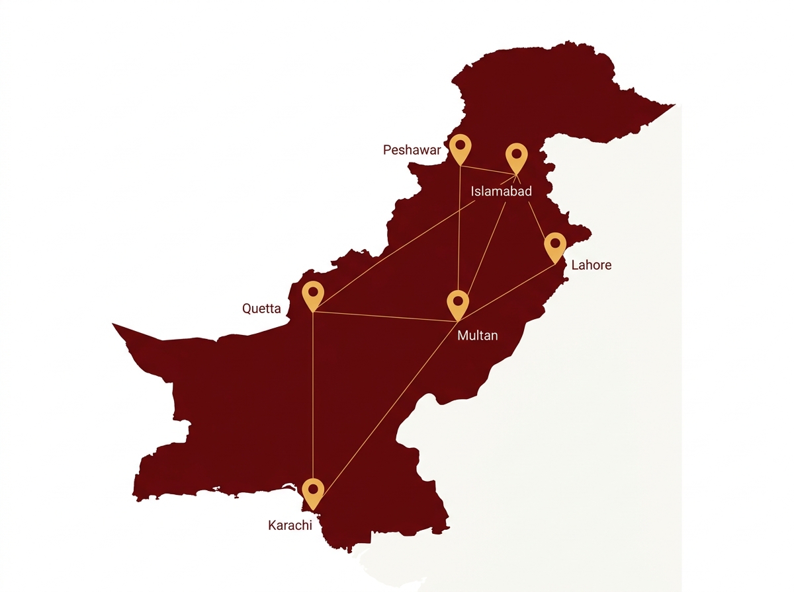
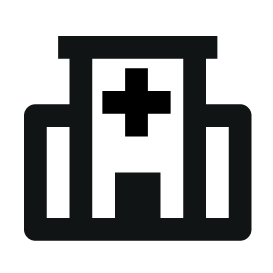
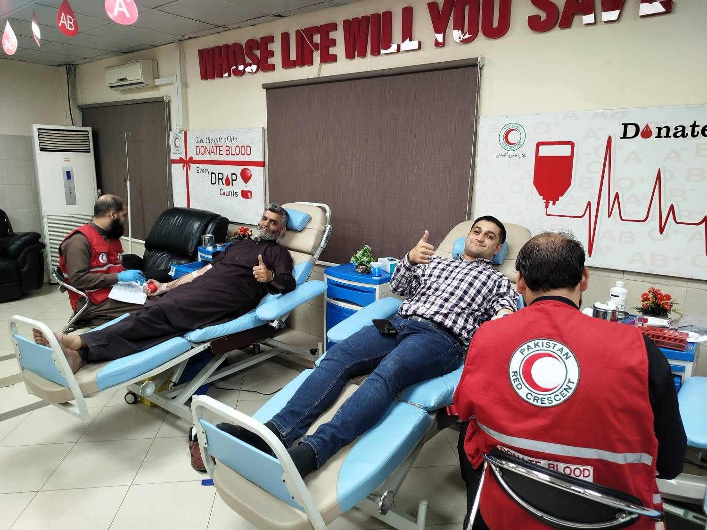

SURKH
CENTRALISED BLOOD INVENTORY
CENTRALISED BLOOD INVENTORY

SURKH achieves a centralised blood distribution system by connecting hospitals, patients and donors in real-time.
In Pakistan, roughly 5000 blood bags are collected everyday against a deficit of 8000.
Out of these, 4 - 13.5% blood is lost due to product expiration and fragmented tracking systems.

Develop trust channels through certified facilities
Real-time updates about available blood nearby
AI Ledger Reader enables local setups to get connected
